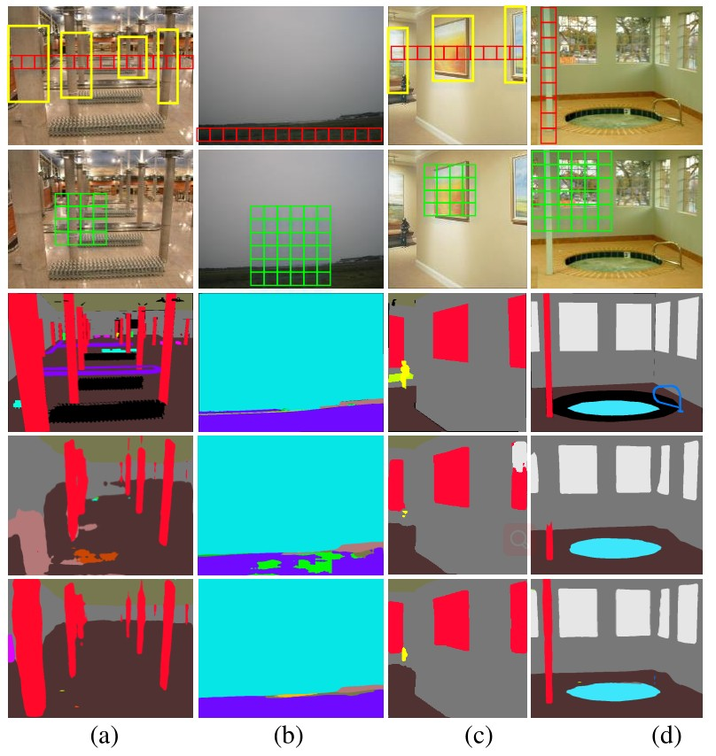
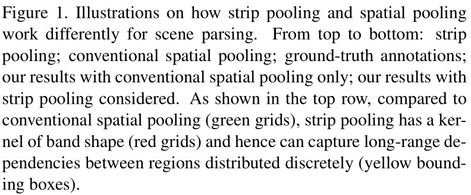
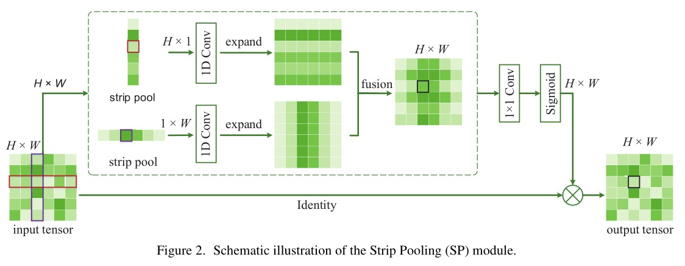
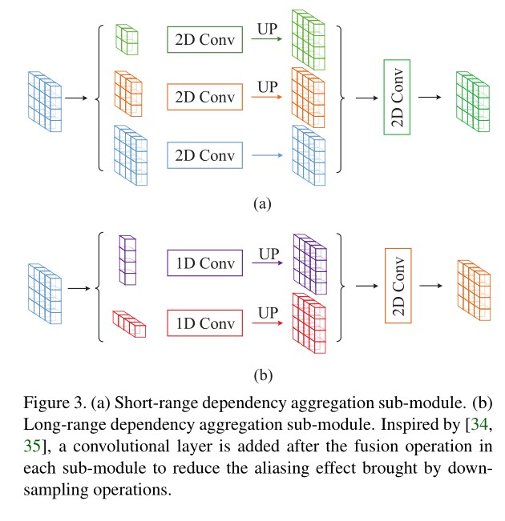

论文名称：Strip Pooling: Rethinking Spatial Pooling for Scene Parsing
论文链接：https://arxiv.org/abs/2003.13328
GitHub：https://github.com/Andrew-Qibin/SPNet
1 摘要
事实证明，空间池可有效捕获用于场景分析等像素级预测任务的远程上下文信息。在本文中，除了通常具有规则形状N×N的常规空间池化之外，我们还通过引入一种称为条带池化的新池化策略来重新考虑空间池化的公式，该策略考虑了一个长而窄的核，即1×N或N×1。基于条带化池，我们进一步研究空间池化体系结构的设计，方法是：1）引入一个新的条带池化模块，该模块使骨干网络能够有效地对远程依赖性进行建模； 2）展示具有多种空间池化的新型构建块；3）系统地比较建议的条带池和常规空间池技术的性能。两种新颖的基于池的设计都是轻量级的，并且可以在现有场景解析网络中用作有效的即插即用模块。在流行的基准（例如ADE20K和Cityscapes）上进行的大量实验表明，我们的简单方法建立了最新的技术成果。
2 论文内容
模块效果图
 
SPM(Strip Pooling Module)
SPM由两条路径组成，它们分别侧重于沿着水平和垂直空间两个维度捕获远程上下文。
与全局平均池化相比，条纹池化考虑的是较长但较窄的范围，而不是整个特征图，避免了在相距较远的位置之间建立不必要的连接。与需要大量计算来建立每对位置之间关系的基于注意力的模块（no-local ）相比，SPM是轻量级的，可以很容易地嵌入到任何构建块中，从而提高捕获远程空间依赖关系和利用通道间依赖项的能力。

MPM(mixed pooling module)
- 如果因为上面的考虑将网络中的所有pooling全部换成strip pooling操作，则必然会影响原来的非长条物体的效果，就得不偿失了。因此，作者将strip pooling和pyramid pooling都加入进来，构造成mixed pooling module
- 其中，strip pooling用于解决long-range dependencies，而轻量级的pyramid pooling用于解决short-range dependencies
作者提出了一种新的附加组件块，称为混合池模块(MPM)，以进一步在高语义级别上建模长期依赖关系。它通过利用具有不同内核形状的池化操作来探测具有复杂场景的图像，从而收集有用的上下文信息。之前的研究结果表明，金字塔池模型(pyramid pooling module, PPM)是增强语义分割网络的有效方法。然而，PPM严重依赖于标准的池化操作(尽管不同的池内核位于不同的金字塔级别)。考虑到标准池化和条纹池化的优点，作者改进了PPM，提出了混合池模块(MPM)，它侧重于通过各种池化操作聚合不同类型的上下文信息，以使特征表示更有辨别力。

3 代码
1 | class StripPooling(nn.Module): |
参考
论文笔记-Strip Pooling: Rethinking Spatial Pooling for Scene Parsing